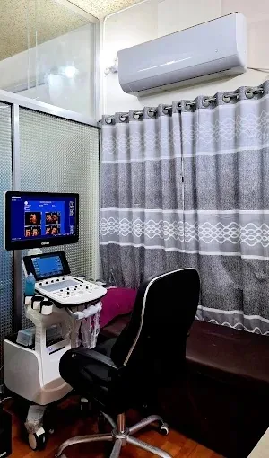

PALLABI HOSPITAL & DIAGNOSTIC CENTER
Diagnostic Services
Explore our diagnostic environment and contact us for available tests and preparation instructions.
DIAGNOSTIC ENVIRONMENT
Information for clearer decisions.
Our photographs show a dedicated diagnostic examination room. Please call the hospital for current tests, preparation requirements, report collection details and costs.
View diagnostic photos
TEST ENQUIRIES
Diagnostic services overview
Please ask the hospital which diagnostic tests and examinations are currently available.
Clinical Laboratory
Call the hospital to ask about availability and preparation.
Ultrasonography
Call the hospital to ask about availability and preparation.
Clinical Pathology
Call the hospital to ask about availability and preparation.
ECG & Cardiac Tests
Call the hospital to ask about availability and preparation.
Radiology
Call the hospital to ask about availability and preparation.
Specialized Diagnostics
Call the hospital to ask about availability and preparation.